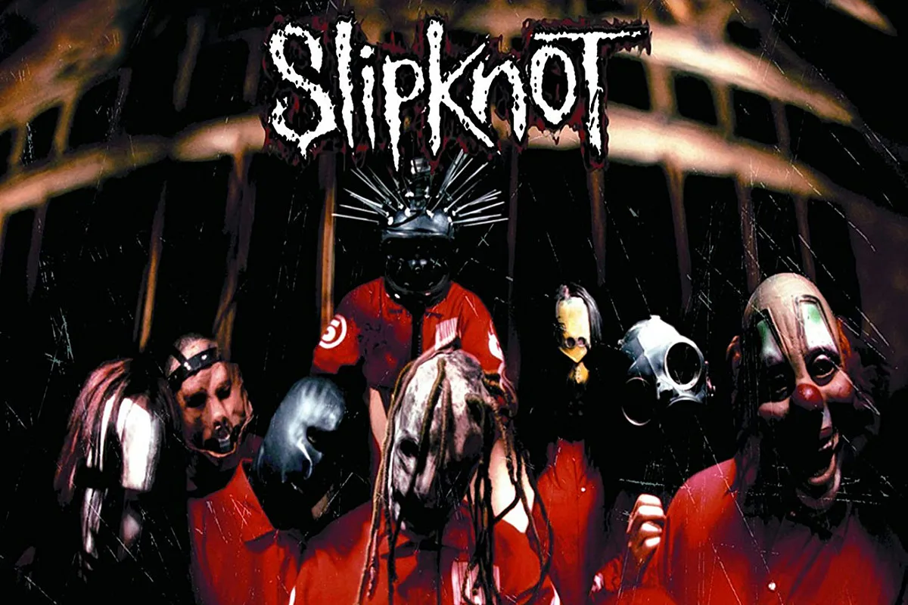
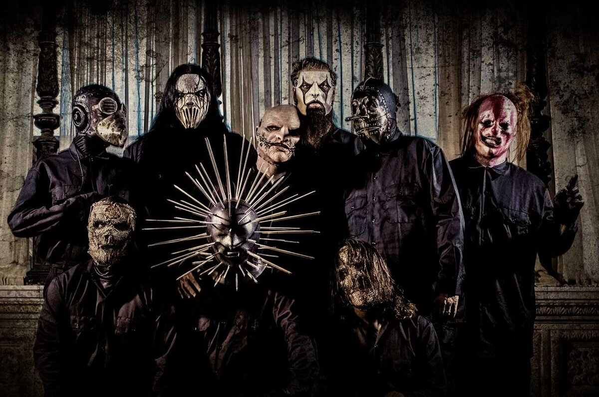

.png)
Группа Slipknot

«Slipknot» (в переводе с англ. — «скользящий узел», «петля», «удавка») — американская ню-метал-группа, образованная в сентябре 1995 года в Айове, США. Альбомы группы получили статус платиновых, всего продано более 30 млн копий по всему миру из которых 6 миллионов в США В 2006 году группа получила свою единственную на сегодняшний день премию «Грэмми». Коллектив известен тем, что его участники на концертах, фотосессиях и интервью носят маски и специальные комбинезоны. Маски видоизменяются с выходом нового альбома. На данный момент группа выпустила семь официальных студийных альбомов. Последний альбом группы, The End, So Far, вышел 30 сентября 2022 года.
Самая популярная песня группы:
История группы
На данный момент группа состоит из 9 человек #0 (Сид Уилсон, DJ), #1 (Джои Джордисон, ударные), #2 (Пол Грей, бас), #3 (Крис Фен, перкуссия), #4 (Джеймс Рут, гитара), #5 (Крейг Джонс, сэмплер/клавишные), #6 (Шон Крэган, перкуссия), #7 (Мик Томпсон, гитара), #8 (Кори Тэйлор, вокал). Такой состав группы образовался в 1998 году, до этого в составе группы происходили различные изменения. SlipKnoT являются первыми сколько-нибудь известными музыкантами из штата Айова за всю историю его существования. Участники группы до этого работали в различных музыкальных коллективах города Де-Моине. И, как водится в маленьких городках, все эти группы давали свои выступления каждое воскресенье на одной сцене по очереди. Так могло продолжаться очень долго, если бы не честолюбие Шона Крэгана, которое в один прекрасный момент подтолкнуло его к идее создания команды, вместе с которой можно было бы взяться за завоевание мировой сцены. Основанием группы считается встреча Пола Грея и Шона Крэгана в 1991 году, тогда же к ним присоеденился и Андерс. Потом было набрано ещё несколько человек, состав группы постоянно менялся. Все, кто были в SlipKnoTе были родом из штата Айова и только Пол был из Лос-Анджелеса. В 1992 году группа официально составляла 6 человек (Джои, Пол, Шон, Андерс, Грэг, Джош). Тогда ещё не было на их лицах масок, до того момента пока Шон не пришёл в маске, всех это развеселило, но приняли идею. Это лишь начало их истории для полного ознакомления рекомендуется просмотреть видеоматериал с полной историей группы(приложен сверху).
Учасники группы
Ознакомиться с участниками из Группы Slipknot
